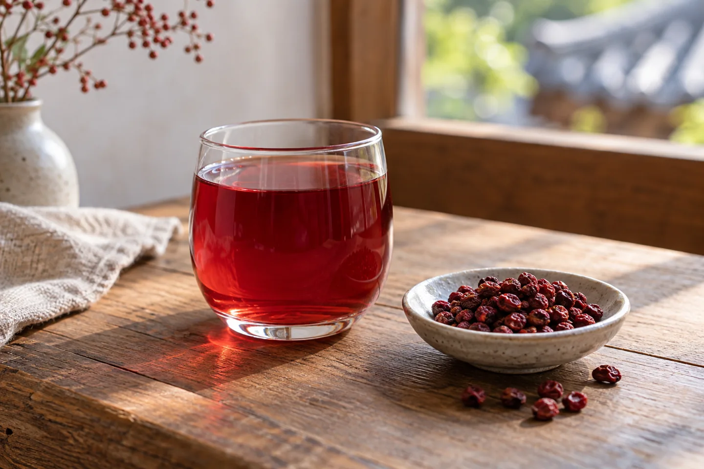
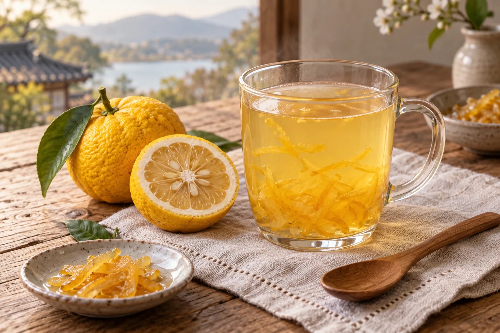
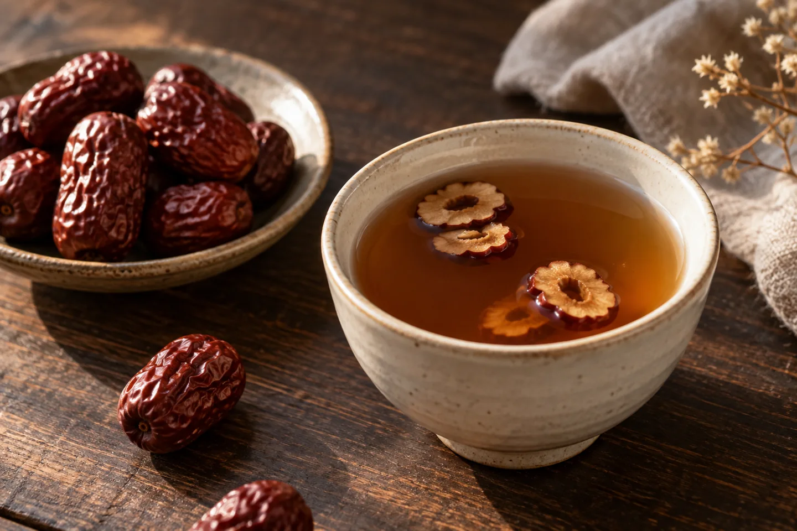

A travel day does not have to be a race between landmarks. A tea stop gives you a chance to sit down, look through the menu, and leave a little space between the places you want to see. This is a guide to choosing a drink, rather than a story of a café I have visited.

Traditional tea menus can include fruit and other ingredients as well as tea leaves. Korea Tourism Organization listings for Insa-dong tea houses offer examples: omija, citrus, jujube and ginger drinks, sometimes alongside Korean sweets. The names below are useful starting points; recipes and serving styles vary.
Traditional tea menu examples — VISITKOREA ↗
Omija: five flavors, one red drink.

Omijacha (오미자차) is made with omija fruit. Its name refers to five flavors: sweet, sour, bitter, spicy and salty. That description explains the fruit’s name; it does not mean every café drink will give each flavor equal weight. Sugar, dilution and preparation shape the cup you receive.
If a bright fruit drink sounds appealing, look for 오미자 on the menu and ask whether the version is hot or cold. Do not assume the pictured glass matches a particular shop.
Omija Tea — Korea Tourism Organization ↗
Yuja: choose a citrus note.

Yujacha (유자차) is a citrus tea option you may find on a traditional café menu. Think of it as a useful name to recognize when you want a citrus-based drink. The illustration shows one possible presentation, including peel; the actual recipe and sweetness belong to the shop.
Before ordering, ask how sweet it is and whether sweetness can be adjusted. A drink prepared from an existing mixture may offer less flexibility than you expect.
Tteulan’s traditional tea menu — VISITKOREA ↗
Daechu: a gentle, warm choice.

Daechucha (대추차) is jujube tea. Korea Tourism Organization describes a preparation made by simmering dried jujubes; some versions include pear, ginger or honey. Concentrates are another way it can be prepared. Color, texture and added ingredients can therefore differ from cup to cup.
Read the ingredient description if it is available, or ask the staff. Choose by flavor and your own preferences rather than expecting a particular health effect.
Jujube Tea — Korea Tourism Organization ↗
Make room for the pause.
- Confirm the price and size on the current menu before ordering.
- Ask about hot or cold service: “따뜻한 거 있어요?” means “Do you have a hot version?”
- If you want something beside the tea, look at the sweets menu. Offerings differ by café.
- For a specific tea house, check its current opening information before traveling there.
Insa-dong offers one place to begin researching a tea stop. The tourism organization lists Jeontong Dawon within Kyung-in Museum of Fine Art, with traditional teas and Korean sweets. Treat its official listing as a planning reference, then confirm the business’s current details for your visit.
Jeontong Dawon visitor listing — VISITKOREA ↗
Official Korea Tourism Organization references checked October 11, 2026. This guide makes no claim about current café prices, opening hours or health benefits. All four images are AI-generated illustrations; real ingredients, rooms and presentation may differ.